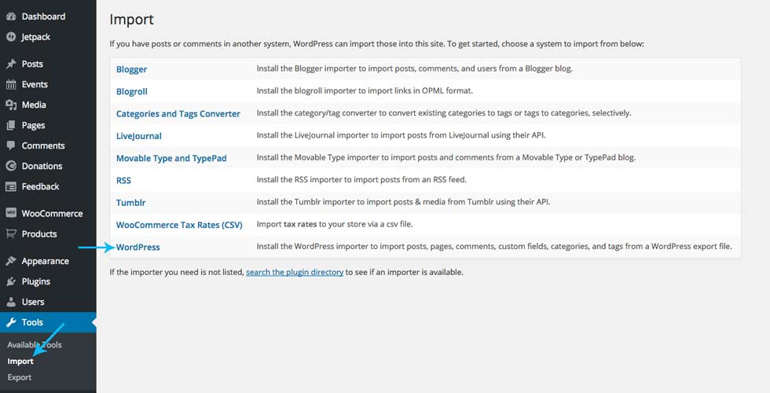
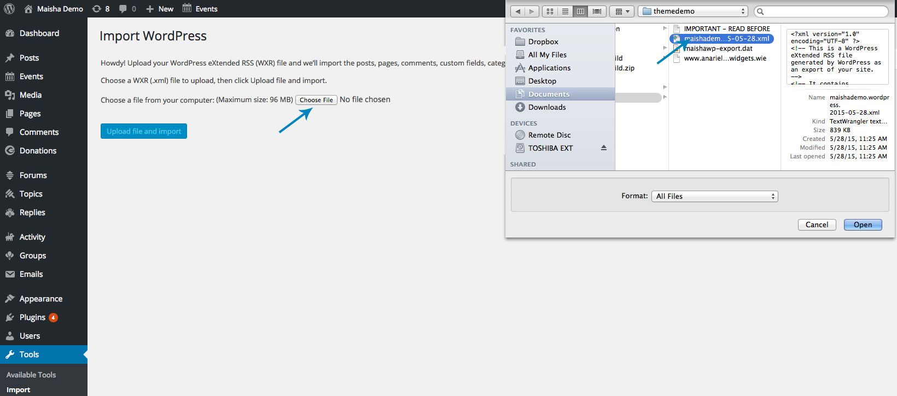
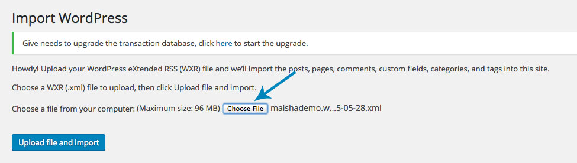
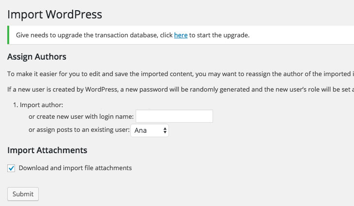
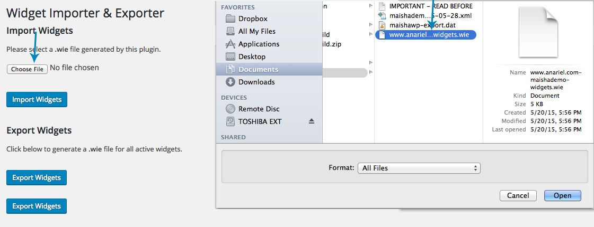
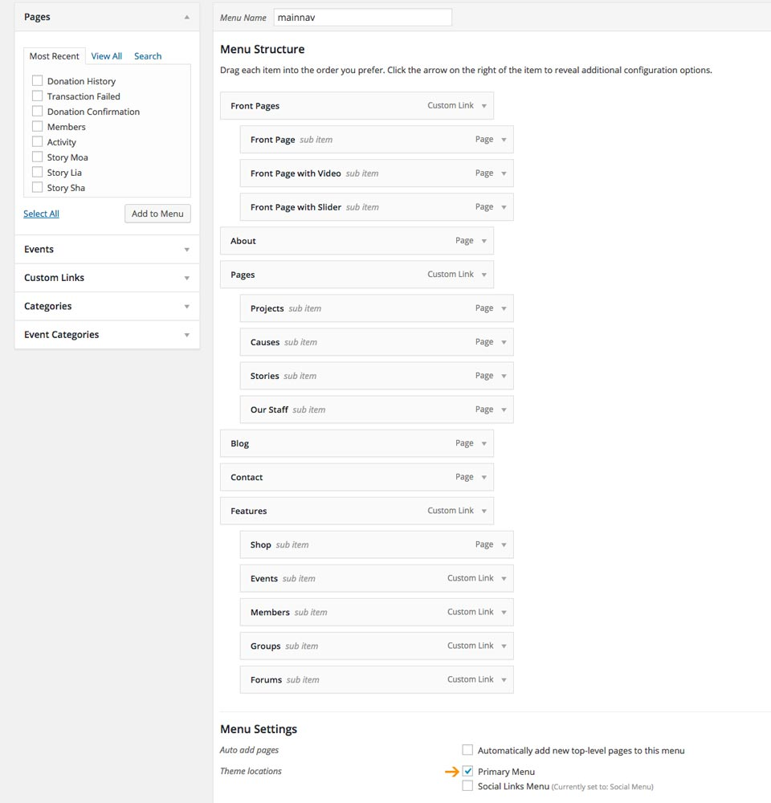
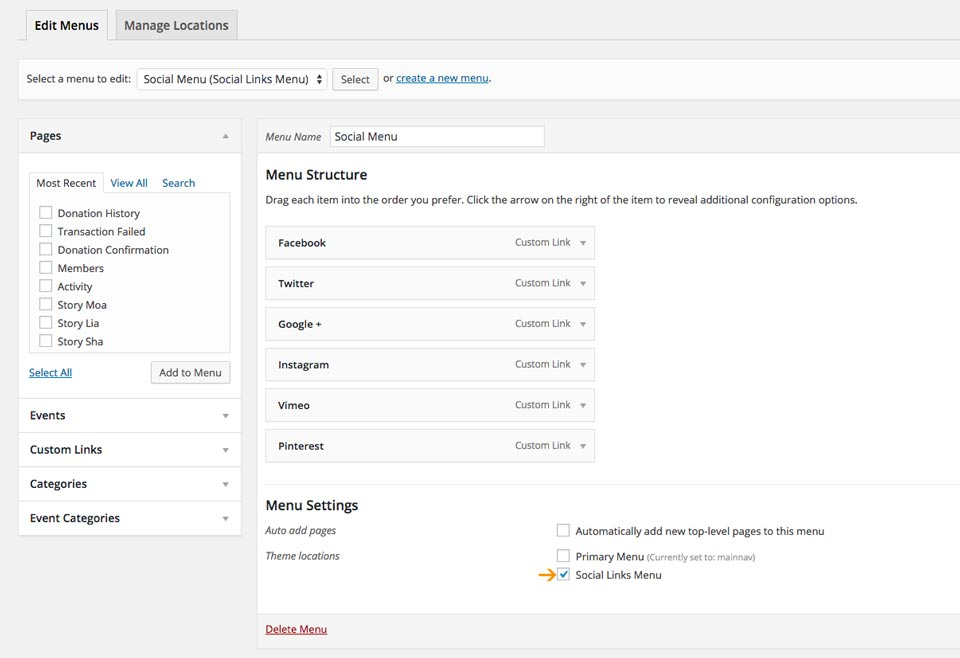
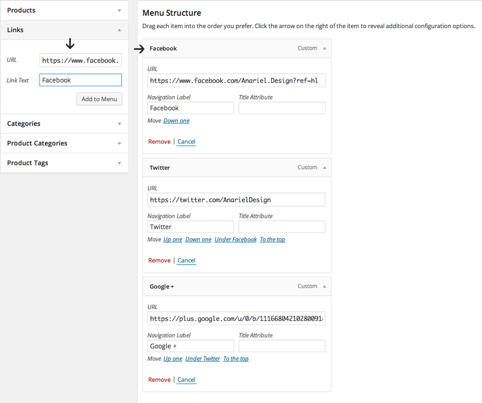

13. Demo Content
If you want to replicate the demo site before you start editing and adding your own content then these are the steps you need to follow:
- Install all the plugins used in the demo. The plugins are listed below.
- Import XML file using standard WordPress import feature.
- Import widget settings (WIE file).
- Import Customizer Settings (DAT file).
- Set up primary and social menus in Appearance » Menus.
- Set up a static front page in Settings » Reading.
13.1 Plugins used with this theme:
1. BuddyPress: https://buddypress.org/ - run your own social network
2. bbPress: https://bbpress.org/ - forums made the WordPress way
3. Contact Form 7: https://wordpress.org/plugins/contact-form-7/ - contact form
4. Give: https://wordpress.org/plugins/give/ - empower your cause: start accepting donations on WordPress with Give.
5. The Events Calendar: https://wordpress.org/plugins/the-events-calendar/ - plugin that lets you easily share your events.
6. Soliloquy Slider plugin can be found inside the plugins folder
7. WooCommerce: http://wordpress.org/plugins/woocommerce/ - create your own shop
8. Widget Visibility: https://wordpress.org/plugins/widget-visibility/ - control which pages your widgets appear on WordPress
Plugins mentioned above are not mandatory for theme to work! However, if you want to import demo content please install and activate those plugins before going to the next step!
13.2 Import XML File
To import the demo content, locate the XML file inside the "themedemo" folder within the main theme folder. Navigate to Tools » Import, click on WordPress (install the Import plugin, if not already installed) and upload/import the XML file named "maishademo.wordpress.2015-05-28.xml".




13.3 Demo Widgets
After you imported the demo content, you need to import widget settings. Before you import widget settings navigate to the Appearance » Widgets and remove all widgets from the sidebars. Import file is also included in the "themedemo" folder. To import widget settings please install: https://wordpress.org/plugins/widget-importer-exporter/ . Once installed activate the plugin and navigate to the Tools » Widget Importer/Exporter and import www.anariel.com-maishademo-widgets.wie file.

13.4 Customizer Settings
To import Customizer settings please install: https://wordpress.org/plugins/customizer-export-import/ and activate it. Navigate to the Appearance -> Customize -> Export/Import and import the maishawp-export.dat file.
13.5 Set up the Primary Menu
Navigate to the Appearance » Menu and select "Primary Menu" from the dropdown.

In the Theme Locations check Primary Menu and save it.
13.6 Set up the Social Menu
Navigate to the Appearance » Menu and select "Social Menu" from the dropdown.

In the Theme Locations check Social Links Menu
All you need to do is add socials inside the Custom Links menu. Inside the "URL" field add your social page url and inside the "Link Text" add the name of the social, for example "Facebook". After you add it to the menu, social icon will automatically show up inside the socials bar. Once you are finished click "Save Menu".

Available icons
Linking to any of the following sites will automatically display its icon in your menu.
- Codepen
- Digg
- Dribbble
- Flickr
- GitHub
- Google+
- RSS Feed (urls with
/feed/) - Tumblr
- Vimeo
- WordPress
- YouTube
13.7 Set up Static Front Page
Navigate to the Settings » Reading and instead of the default "Front Page Displays: - Your latest posts" choose "A static page" and select "Welcome to the Didi" and "Blog". From the Posts Page dropdown select a page you want to use as your blog page.